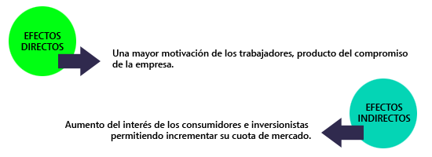

4.1.- los grupos de interés o stakeholders
La responsabilidad social corporativa es fundamentalmente un proceso sistematizado que tiene como objetivo crear valor e implementarlo a las diversas partes interesadas, que interactúan y desarrollan estrategias que les van a permitir alcanzar sus objetivos.
En el contexto económico y de gestión empresarial, capital social hace referencia a las relaciones entre actores económicos y se expresa en el grado de reciprocidad y de confianza necesarias para realizar de forma conjunta y coordinada una actividad productiva.
Se considera que, cuanto mayor capital social hay en las empresas, más posibilidades tienen éstas de éxito empresarial en un entorno altamente competitivo.
Ya no se expresa que la empresa es un lugar de conflicto y confrontación entre diversos actores intervinientes cuyo resultado es la ineficiencia empresarial, sino un lugar de conciliación de intereses que avanzan de forma conjuntada para lograr ventajas competitivas y nuevas oportunidades.
Según el estudio realizado por European Foundation for de Improvement of Living and Working Conditions EFIWC, de 2003, la empresa se enfrenta a tres cuestiones importantes:
La teoría de los stakeholders considera que estos son “aquellos grupos sin cuyo apoyo la organización dejaría de existir”y que se relaciona con “cualquier grupo o individuo que pueda afectar al logro de los objetivos de la empresa o se pueda ver afectado por el mismo”.
Desde esta perspectiva de partes interesadas se puede hacer a priori una clasificación simple de los stakeholders o multistakeholders:
- Entre las partes interesadas que están implicadas en el dialogo social y las que no lo están
- Entre las que están directamente implicadas con la marcha de la empresa y las que solo están interesadas e implicadas de forma indirecta.
- Entre aquellas que pueden expresarse por si mismas y aquellas que no pueden, como por ejemplo las generaciones futuras.
La identificación de los stakeholders supone poner en marcha unos mecanismos de dialogo social que deberá de ser sincero, abierto y activo entre todas las partes interesadas, que permitan a la empresa determinar quién esta implicado con sus actividades y en que medida, algunas partes interesadas son obvias otras no.
Una vez definidas las partes interesadas y su legitimidad deben conocerse las expectativas que estos grupos tienen respecto de la empresa, mediante herramientas de mediciones cualitativas y cuantitativas y examinar en que medida convergen o se separan del resto de los grupos de interés
Según el estudio de EFIWC, antes citado, las principales partes interesadas son:
4.2.- El modelo de gestión de los grupos de interés
La evolución de la empresa lleva aparejada una adaptación a un entorno cambiante y muy exigente a nivel global competitivo, tesis contrapuesta y alejada de la visión del modelo neoclásico empresarial, y en cierta medida interrelacionada con la visión del modelo directivo y vinculada de forma total con la visión del modelo de la empresa basada en los stakeholders.
Desde este paradigma puede decirse que la propia identidad de la empresa puede describirse como resultado de un proceso complejo, dinámico y reciproco entre la dirección de la empresa y el resto de los stakeholders con que se relaciona de forma directa e indirecta.
La RSC generalmente exige recursos humanos, financieros y de tiempo. Como consecuencia, las empresas en regiones ricas disponen de más recursos y tienen mayores posibilidades de invertir en temas relacionados con la responsabilidad social corporativa.
Según un estudio realizado por a European Foundation for the Improvement of Living an Working Conditions en las regiones que registran un mayor desarrollo económico, las empresas centran su atención en el dialogo con los grupos de interés y por tanto, la responsabilidad social corporativa está presente en todos sus actividades, mientras que en las regiones menos desarrolladas, la RSC se centra en cuestiones mas básicas como la filantropía.
Este estudio, también afirma que las empresas que operan en determinados sectores y están mas expuestas a reacciones adversas de los grupos de interés, caso de las empresas de energía, transporte, textil, química y energía nuclear desarrollan más su responsabilidad social de cara a ganarse el favor de la comunidad en la que operan. Así por ejemplo Inditex ha desarrollado un código de conducta común para todos sus proveedores denominado Business Social Compliance Iniciative(BSCI).
El modelo de stakeholders, así a simple vista, parece un poco simple por lo que se podrían categorizar en función de cómo se adjudican unos recursos escasos empresariales, al fin de satisfacer las prioridades de estos grupos de interés y las relaciones multidisciplinares que enfrentan a la organización de empresa.
El principal rasgo que caracteriza la literatura de la RSC pone el énfasis en la satisfacción de aquellos stakeholders que tradicionalmente habían sido menos considerados, básicamente la comunidad y los empleados. Frente al grupo de los propietarios cuyos objetivos habían constituidos la principal preocupación de las empresas. De este hecho se fundamenta la acción social de las empresas.
La adecuada dirección de los stakeholders implica considerar y atender las demandas planteadas por todos los diferentes grupos que mantengan una relación con la empresa. En un primer momento es conveniente fijarse en los que mantienen una relación comercial directa, para luego hacerlo con los que se tienen una relación indirecta
Para todo este desempeño socialmente responsable se debe invertir en actividades de clasificación, selección, control y formación de proveedores y distribuidores, aunque con frecuencia se puede incurrir en suministros más caros, aunque como ya se ha señalado la estrategia que sigue la empresa responsable es una estrategia de diferenciación y no de liderazgo en costes.
Aquellos proveedores o distribuidores mas comprometidos socialmente soportaran unos costes adicionales pero como compensación conseguirán diferenciarse del resto pudiendo solicitar un sobreprecio por sus servicios.
4.3.- El mercado y los stakeholders: comercio justo, mercado verde y marketing con causa
Entre los stakeholders de la empresa, los consumidores y clientes constituyen un grupo especialmente destacado puesto que la satisfacción de sus necesidades es el hecho que da sentido a la propia existencia de la empresa.
Para desarrollar las actuaciones la empresa de cara a sus clientes es preciso que se den dos circunstancias simultáneas:
Los estudios empíricos ponen en evidencia que la información existente sobre RSC pueden tener un impacto significativo en la evaluación que los consumidores realizan de las empresas y de sus productos y pueden condicionar su conducta, pero lo que desde luego ha quedado patente es que las conductas poco éticas o irresponsables han generado un efecto negativo que en algunos casos han llevado a campañas de boicot contra la empresa.
También hay que tener en cuenta que desde hace tiempo existe un nuevo tipo de consumidor de marcada preocupación medioambiental y social dispuesto a seguir una conducta de compra que demanda mayor preocupación del mercado de las empresas por los productos verdes o ecológicos y el comercio justo.
Este nuevo mercado verde y de comercio justo se sustenta en un enfoque alternativo de las relaciones entre los diversos actores: productores, importadores, tiendas y consumidores, que se guían por criterios de funcionamiento democráticos, igualdad de genero, ausencia de explotación laboral infantil y trabajos forzosos, respeto por el medioambiente y transparencia en su funcionamiento.
De otro lado, para las empresas el marketing constituye un elemento esencial de planificación estratégica de mercado, que evalúa necesidades y determina posiciones en los mercados. El denominado “marketing con causa” hace que la empresa vincule sus productos y marcas a la ayuda de causas sociales, obra social, como compromiso solidario en beneficio de la imagen corporativa.
Las empresas que ejecutan políticas de Responsabilidad Social Corporativa alcanzan mayor credibilidad que aquellas que no lo hacen, ya que se alinean con los valores e inquietudes de los ciudadanos y este hecho repercute positivamente en los resultados que obtienen.
El marketing con causa esta ligado a los medios de comunicación que ejercen un papel esencial de transmisores de la imagen corporativa. Dado que los asuntos de RSC constituyen por su propia naturaleza un asunto de gran interés para las personas y organizaciones, los medios de comunicación se erigen en grandes creadores de opinión al respecto y aportan, mediante su difusión un gran alcance a la sensibilización de la ciudadanía, un plus de relevancia esencial para las empresas. Este stakeholder merece una atención especial desde la dirección de las compañías.
Otro de los grupos de interés que merece un apartado especial en esta revisión es el de los competidores, por su gran valor estratégico y su reacción a los programas de RSC en los mercados. Es frecuente que en las memorias de RSC no exista un apartado dedicado a este stakeholder, pero es verdad que incide de forma directa y condiciona la forma en que la empresa va a competir o establecer acuerdos para desarrollar acciones sociales conjuntas.
4.4.- Los stakeholders estratégicos en la diferenciación empresarial
Por la gran difusión que desde los medios de comunicación se hace de las actividades de las ONGs, de sus propuestas y denuncias, el papel de este stakeholder es cada vez más especial. Principalmente la finalidad perseguida tiene que ver con el desarrollo comunitario, la previsión de servicios sociales básicos y la mejora de las condiciones de los más desfavorecidos o la protección del medioambiente y los derechos humanos.
La presencia de las ONGs en los últimos años ha sido creciente y juegan un papel esencial en la concienciación y sensibilización de la opinión publica. La empresa debe adoptar una postura transparente, ofreciendo toda la información pertinente sobre su RSC y mantener un dialogo continuo con las ONGs para así detectar con antelación suficiente aquellos puntos débiles que merecen un cambio de política empresarial. La participación de las ONGs como expertos stakeholders resultará de gran valor para la RSC y la mejora continua.
La RSC y el stakeholder de los sindicatos se concibe de distintas formas: plantea desafíos a los sindicatos, pero también constituye una oportunidad de acción. El desafío para el sindicalismo consiste en evitar que la RSC se convierta en un sustituto del papel que deben desempeñar los gobiernos y los sindicatos, lo que exigirá un enfoque distinto según el área de que se trate.
Para hacer frente a los desafíos y sacar provecho de las oportunidades se deberá adoptar un enfoque distinto según el área de que se trate. La RSC ha proporcionado herramientas que se pueden utilizar como palanca con las empresas. Este nuevo entorno ha dado lugar a códigos de conducta, a un mayor respaldo a las acciones sindicales impulsadas por los accionistas y a mejores procedimientos de seguimiento en las directrices de la OCDE para las empresas multinacionales.
No se deben pasar por alto esas oportunidades, pero, al mismo tiempo, no se deben dejar de mirar de frente los desafíos que se plantean a los sindicatos. La oportunidad para los sindicatos radica en poder utilizar la RSC para promover una cultura de acatamiento de las leyes y respeto de las normas, además de promover buenas relaciones laborales y respeto el papel de los sindicatos.
A menudo los departamentos de RSC no efectúan distinción alguna entre ONG y sindicatos y muchos no tienen en cuenta a los sindicatos. Esto sucede incluso en empresas cuyos empleados están afiliados a sindicatos. Uno de los motivos es que, dentro de una empresa, las actividades en materia de RSC tienden a estar separadas de las funciones relativas a recursos humanos y personal. Cuando el departamento encargado de la RSC no comprende la índole dual de los sindicatos como organizaciones laborales y, al mismo tiempo, como organizaciones de la sociedad civil, tampoco están comprendiendo cómo una empresa puede enraizarse realmente en una comunidad a través de los sindicatos de sus empleados.
Los sindicalistas están a favor de las normas laborales y de su aplicación. El fenómeno de la RSE y especialmente de los códigos de conducta para los proveedores han dado oportunidad de promover un reconocimiento y valoración de las normas de la OIT más grande que nunca. En verdad fue el movimiento sindical internacional el que introdujo la utilización de las normas internacionales del trabajo en el debate sobre los códigos de conducta que abarcan las prácticas laborales. Sin embargo, los sindicalistas enfrentan una serie de graves desafíos en lo relativo al respeto de las normas. Las empresas están utilizando los códigos de conducta y otras formas de actividad normativa privada del ámbito social para redefinir o reinterpretar las normas a fin de que parezca que su responsabilidad es menor de lo que realmente es. Por ejemplo, muchas empresas prometen respetar la libertad sindical solamente cuando así lo prescribe la ley y no aceptan asumir responsabilidad alguna al respecto por operar en entornos donde no se autoriza este derecho humano fundamental. Si bien el derecho de negociación colectiva ahora se reconoce como uno de los derechos laborales fundamentales, las empresas raramente lo incluyen, ni siquiera cuando han aceptado respetar la libertad sindical de los trabajadores.
Muchas empresas sostienen que los convenios de la OIT no se aplican a las empresas y hacen caso omiso de que con la Declaración tripartita de la OIT sobre las empresas multinacionales y la política social, empleadores, gobiernos y trabajadores reconocieron que los principios subyacentes de muchos de los convenios de la OIT se podrían y deberían aplicar al comportamiento empresarial. El hecho de que los convenios de la OIT den definiciones y vayan acompañados de jurisprudencia que aclara su significado en circunstancias específicas no ha desalentado a las empresas ni a sus asesores en materia de RSC, que se han ocupado de redefinir de manera más conveniente para ellos expresiones como «trabajo infantil» o de promover mecanismos dominados por los empleadores sustituyendo a la libertad sindical.
El desafío para los sindicatos es asegurarse de que se elaboren normas para los auditores sociales y que las inspecciones privadas de los lugares de trabajo que sean compatibles con las mejores prácticas de la Inspección del Trabajo, que promuevan una cultura de acatamiento a la ley y quesean coherentes con el papel de las relaciones laborales.
4.5.- Las estrategias de RSC
La RSC es una estrategia que permite incrementar la reputación y, por consiguiente, facilitar la competitividad económica de las empresas.
La Comisión de la UE considera que la RSC es una estrategia valida para cualquier dimensión de empresa, grandes, medianas y pequeñas empresas, ya que la incidencia económica de la RSC puede verse de los efectos directos y los efectos indirectos:

El objetivo de toda empresa es conseguir el máximo de beneficios en función del capital invertido de ello se deparan dos niveles básicos de estrategia: la estrategia corporativa y la estrategia de negocio. De estos dos parámetros dependerá la utilización delos recursos disponibles en los distintos departamentos o áreas de la organización.
La RSC constituye un elemento condicionante de la estrategia empresarial, en los dos niveles, corporativo y competitivo, por todo la asunción de la RSC por parte de la empresa tiene más que ver con su carácter estratégico que con su vertiente filantrópica de altruismo o cuestiones morales, es por ello que no debe causar extrañeza que las políticas de compromiso social con el propósito de beneficio social también lo sean de interés económico para la empresa, por ejemplo el uso de energías renovables y el reciclado o políticas de personal solidarias, integradoras y respetuosas con los empleados.
Las ventajas a nivel competitivo derivadas del compromiso social crean valor añadido a productos y servicios ofertados y buscan la diferenciación del negocio de los competidores.
Comportarse de una forma socialmente responsable a menudo conlleva sacrificios a corto plazo, pero también y con frecuencia origina ganancias a largo plazo, el objetivo a alcanzar se traduce, aunque sea indirectamente, en un beneficio económico.
La estrategia competitiva basada en la diferenciación supondrá a la empresa unos costes adicionales, por lo que la estrategia tendrá sentido cuando el mercado es maduro y estos, los clientes, están dispuestos a pagar el sobreprecio que tiene dicho coste.
La RSC asumida por la empresa puede condicionar ciertos atributos tangibles de los productos, por lo que condicionarán las características de los productos y, en muchas ocasiones, supondrán un incremento del coste de fabricación.